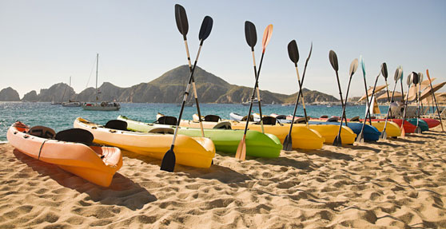

On the water
A first-timer's guide to sunrise kayaking
The island is quietest before breakfast. The trade wind is lighter, the water lies flat, and the first color arrives long before the heat. A sunrise paddle asks for an early start, but very little else.
Pack water, reef-safe sun protection, and a dry layer for the return. Guides provide safety equipment and set the route after checking the morning conditions. New paddlers stay inside the cove; experienced groups can trace the outer shoreline.
The best advice is simple: look up. The point is not distance. It is watching the island wake from a seat on the water.